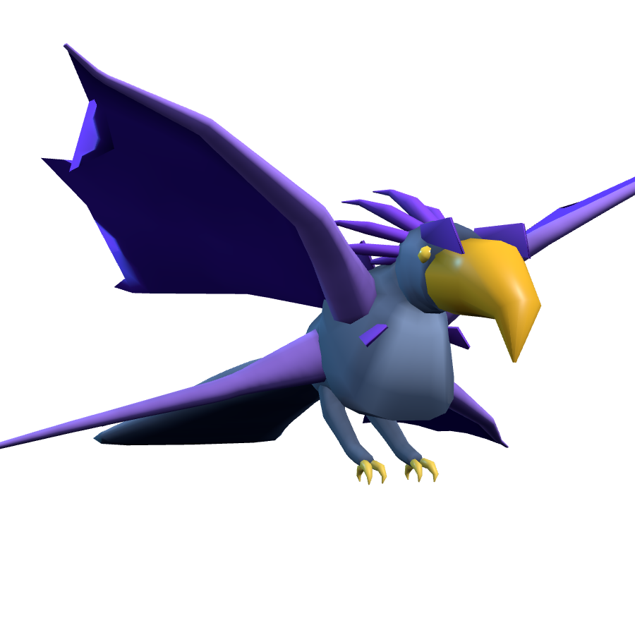

Threads｜Ariescar anyCreature：一句話生成可用於遊戲的 3D 生物 GLB 流程

一句話摘要
`anyCreature` 是一個「Text → game-ready 3D creature」實驗框架：讓 AI agent 從一句需求出發，透過最多兩個追問、JSON spec、ACS engine 與品質檢查流程，輸出可用於遊戲的 GLB 生物模型與離線展示頁。
為什麼保存
這則 Threads 只有簡短貼文與 GitHub 連結，但背後 repo 很適合收進 AI 學習雷達：它不是單純 3D 生圖，而是把 AI agent 工作流、程序化 3D mesh 生成、品質 gates、盲測式 silhouette reader 與 GLB delivery 包在一起，對「AI 生成遊戲資產」「agent 驅動創作管線」「可驗證的生成式設計」都有參考價值。
來源脈絡
- Threads 作者：Ariescar（@ariescar0326）
- 貼文內容：分享 GitHub repo `Ariescar/anyCreature`，並表示歡迎反饋、會持續優化架構。
- GitHub 專案：`anyCreature`
- License：MIT
- 主要語言：JavaScript，輔以 Python、HTML、Shell
- Repo 建立時間：2026-08-17
- README 標示版本：1.2.0
專案重點整理
- 目標：從一句文字需求，例如「make me a menacing mountain giant」，產出可用於遊戲的 3D 生物。
- 輸出：skinned、animated、vertex-coloured、AO-baked 的 GLB，以及 offline showroom viewer。
- 核心限制：每個生物都由一份 JSON spec 編譯，不使用既有 mesh 檔、下載素材包或 photogrammetry。
- Engine：`engine/cli.js`，介面是 `node engine/cli.js spec.json out.glb`，engine 本身零 runtime dependencies。
- Tooling：測量與展示工具會用到 headless Chromium / Playwright；也需要 Node 18+、Python 3.9+。
- 範例：repo 內建 `example/wolf.json`，README 提到範例 wolf 約 2,211 vertices、31 joints。
工作流設計
`anyCreature` 把生成流程拆成 cards：
- `00_START`：接收使用者需求，最多追問兩題。
- `01_LOW`：先做誇張、可辨識的低階輪廓設計。
- `02_MID`：補齊身體與各部件。
- `03_HIGH`：加入顏色、材質感與動畫。
- `04_SHIP`：驗收、stamp identity、輸出交付包。
README 的核心觀念是「clean painter + strict inspector」：創作端盡量自由，品質控制交給獨立 gate，而不是讓同一個設計 agent 自評。
品質 gates 與可驗證性
- Gate 1：RECOGNISED。四個視角都要讓 context-free reader agent 看得出是什麼。
- Gate 2：PUNCHIER。新一輪設計只能讓輪廓更有力；如果變得更溫馴，即使更正確也要 revert。
- 測量指標包含：四視角 silhouette、24px thumbnail、寬高比、質量分布、腿部比例、turn count、IoU regression guard 等。
- Engine 會用 `BLOCK:`、`warn:`、`info:` 區分硬性失敗、可疑輸出與資訊提示。
值得借鏡的地方
- 將 AI 生成結果限制在可檢查的 JSON spec，而不是只輸出不可控圖像。
- 把「可辨識」與「更有戲劇張力」做成 gate，避免模型自己知道答案而高估結果品質。
- 用 calibration 樣本確認檢查器在本機能正確區分該過與該擋的 spec。
- 對遊戲資產生成而言，GLB、rig、animation、vertex colours、AO 與 showroom viewer 都比單張概念圖更接近可交付資產。
限制與提醒
- README 坦承某些 isolated-part blind reads 會誤判，例如 dome-plus-hanging-tube 類頭部；需要看 whole-body read。
- 成本資料有限，README 提到 boss 等級案例約 4.4M tokens，minion / NPC 成本仍需實測。
- 1.2.0 新增 `part_attachment` 與 `mirror_distortion` 檢查，舊 spec 可能會被擋下。
- 範例 wolf 只有 idle 與 move 兩段動畫；若照 cards 要求，完整交付仍應補 attack。
- 若 Playwright 無法安裝，仍可編譯 creature，但無法跑測量與 gates；而 gates 正是此架構最關鍵的部分。
快速試用指令
```bash
bash setup.sh
node engine/cli.js example/wolf.json out/wolf.glb
```
`setup.sh` 必須輸出 `calibrate OK` 後，才建議信任後續檢查結果。
原始連結
Threads：
https://www.threads.com/@ariescar0326/post/DcLWuBvH0PJ
GitHub：